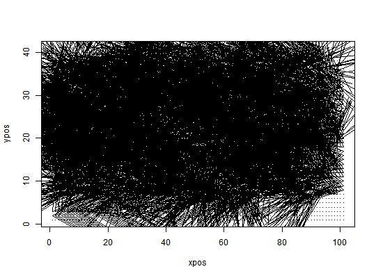
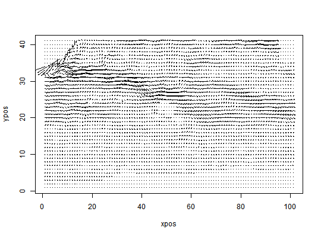
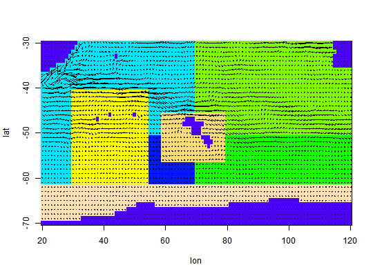

This function plots a flow field given as west-east and south-north velocity values at regularly spaced grid points.
quiver(u, v, xpos = col(u), ypos = row(u), add = FALSE, scale = 1)
| u | The west-east velocities as a matrix. |
|---|---|
| v | The south-north velocities as a matrix. |
| xpos | Positions of the arrowbases in x-direction. |
| ypos | Positions of the arrowbases in y-direction. |
| add | If TRUE, the flow field is added to the current plot. |
| scale | The length of the longest arrow is 'scale' * 'distance between grid points'. |
data(Udata,Vdata,Sdata) arena = prepare.arena(Udata,Vdata,Sdata) # First use quiver only quiver(arena$U,arena$V)#> Warning: default 'pch' is smaller than number of columns and hence recycled# Now use larger arrows, looks better in this case quiver(arena$U,arena$V,scale=5)#> Warning: default 'pch' is smaller than number of columns and hence recycled# Together with the polygon structure plot(arena,arrow_scale=5)